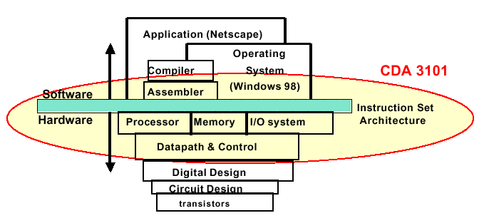
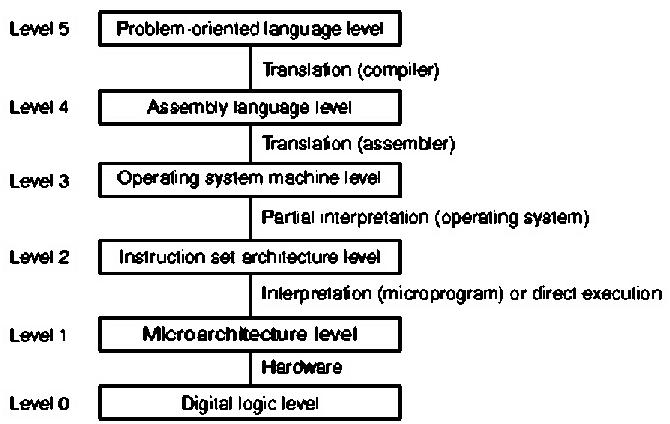
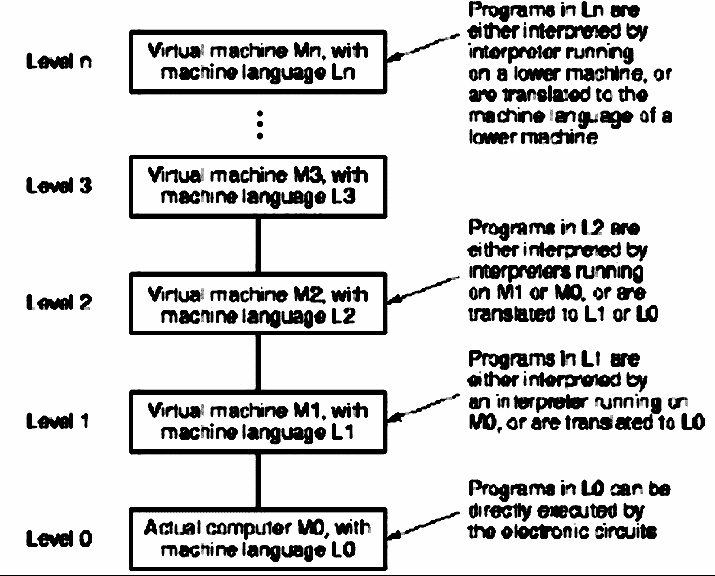
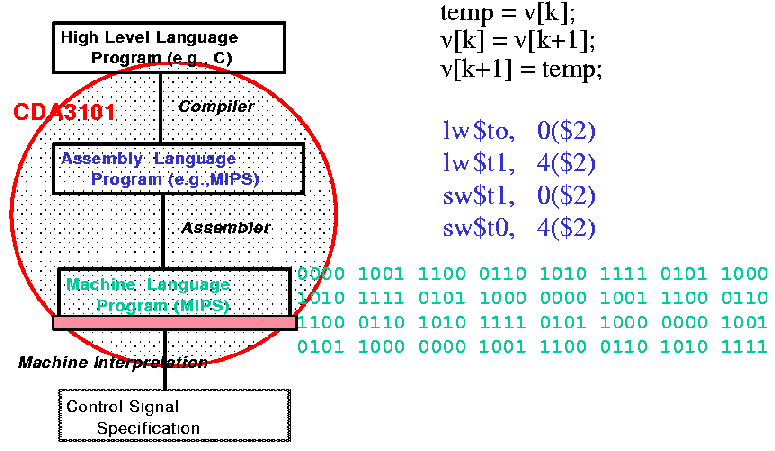

As shown in Figure 1.1, computer systems span many levels of detail, which in computer science we call levels of abstraction. This hierarchy is reviewed in Appendix B.

Figure 1.1. Levels of abstraction in computer systems,
adapted from [Maf01]
In this course, we are concerned with the following components:
Operating System - Provides a convenient interface between (a) the user and his/her application software, and (b) the hardware (sometimes called the bare machine).
Assembler - Translates assembly language, a primitive type of programming language, into machine code, which is a stream of ones and zeroes.
Instruction Set Architecture(ISA) - Interfaces the software (listed above) to the hardware (listed below), and provides support for programming.
Processor, Memory, and I/O System - These components support the execution of machine code instructions expressed in terms of the ISA.
Datapath and Control - Provide a convenient abstraction for connecting the processor, memory, and I/O system and controlling their function efficiently.
If you have taken Dr. Mafla's version of this course, you will be acquainted with the following five components of a computer:
Abstractions help us express intangible concepts in visible representations that can be manipulated. For example, a data structure is an abstraction that organizes concepts or numbers in a comprehensible, organized representation that can be manipulated by a computer program. Figure 1.2 illustrates another view of a computer system, which is comprised of different levels of language and means of translating these languages into lower-level languages. Finally, the microprogram is loaded onto the hardware.

Figure 1.2. Another view of levels of abstraction in computer systems,
adapted from [Maf01].
The salient concepts for Figure 1.2 are listed as follows:
Level 5 - Problem Oriented Language - Provides a convenient interface and applications engine that helps the user produce results specific to a given application area. For example, Microsoft Word is used for document creation or editing, Excel for accounting spreadsheets, etc. The language at this level is usually a sequence of keystrokes or a high-level scripting language. In software design, the language is a high-level programming language such as C, C++, or Java.
Level 4 - Assembly Language - Assembly is a very detailed language that helps the systems programmer or software designer move information around in a computer architecture in a highly specific way. For example, many compilers (programs that translate programming language into an assembly-like language) are written in assembly language. The advantage to assembly language is speed and power in accessing various features of the hardware.
Level 3 - Operating System Machine - Provides a convenient interface between assembly language and the abstraction of the hardware architecture's instruction set. Operating systems generally contain many libraries that help a software developer or programmer connect to lower-level system functions (e.g., I/O, memory allocation, etc.) in an organized way.
Level 2 - Instruction Set Architecture (ISA) - One of the most important parts of a computer is the interface between the lowest-level software and the hardware. The ISA includes anything programmers use to make a binary machine language program work correctly, including instructions, I/O, etc. The ISA facilitates design of functionality independent of the hardware.
Level 1 - Microarchitectural Level - Microinstructions are low-level control instructions that define the set of datapath control signals which apply to a given state of a computing machine. The microinstructions, together with their sequencing, comprise the microarchitecture, whose purpose is to rigorously and consistently express the control of logic circuits that comprise the computer hardware. Designing this control in terms of a program that implements machine instructions in terms of simpler microinstructions is called microprogramming.
Level 0 - Digital Logic - The circuitry that makes a digital computer run is called logic. All processes of a digital computer are expressed in terms of functions of ones and zeros, for example, and, or, and not functions. We will review these logic functions in Section 1.4.
A more general view of the abstractions shown in Figure 1.2 is given in Figure 1.3. Note the recursive levels of translation, from an actual machine (digital logic level in Figure 1.2) to various virtual machines (higher levels of abstraction).

Figure 1.3. Generalized view of levels of abstraction in
computer systems, adapted from [Maf01].
This leads to the following implementational view, where the scope of this course is circled in red.

Figure 1.4. Another view of levels of abstraction in computer systems,
adapted from [Maf01].
When computers were first developed, they had very small instruction sets, because the algorithms and hardware for complicated tasks had not yet been developed. As computer design continued into the 1960s, high-level languages (e.g., FORTRAN, Cobol, Lisp) evolved. Hardware designers formed the idea that it might be useful to develop different computers for each type of language - a FORTRAN machine, a COBOL machine, etc. When this approach was tried, it resulted in very complicated instruction sets. Parallel to this development was the IBM philosophy of upward compatibility, which they also tried to implement in hardware. This produced a huge collection of instructions to support all their old computer programs (called legacy code). The result of this was called Complex Instruction Set Computing (CISC), whose philosophy is summarized as follows:
CISC has many problems. Some of the bigger problems include lack of maintainability, lack of verifiability, and brittleness. In practice, humans don't know how to verify or maintain really complicated designs. And, we don't yet have software that can perform all the verification and maintenance tasks for us. As a result, as CISC machines got more and more complex, they failed considerably more frequently. This yielded brittle (non-robust) performance in practical computing problems. As the world became more dependent on computers, the CISC design philosophy gradually became unacceptable.
In response to this problem, computer designers returned back to the primitive roots of computer science, and developed the Reduced Instruction Set Computing (RISC) philosophy. The main concept in RISC is that of a very simple Instruction Set Architecture. There is a compact microinstruction set, into which every high-level command or instruction is translated by the compiler. RISC computers tend to run faster, are smaller, and have fewer problems because they have a simple instruction set. The RISC philosophy includes the following concepts:
By keeping the hardware small and modular, the design and fabrication, maintenance, and debugging costs are reduced. This makes sense from an economic perspective. It is also easier to make new generations of RISC computer chips, and to produce them more quickly. This implies potentially greater profits by shortening both the development and product life cycles.
Modularity and simplicity in hardware and software help designers and engineers achieve greater robustness, because the system can be maintained and understood more easily. With simple hardware and software, the functionality of the design can be verified more extensively using software-based testing and proof-of-correctness. Finally, it makes sense to put the CISC complexity into the compiler software, because the software can be modified and corrected much more easily, inexpensively, and quickly than hardware can be changed or updated. Again, this makes good economic sense, because development and re-work costs are significantly reduced.
Thus far, we have seen that computer hardware (software) evolved in the following stepwise fashion:
Step 1. - Bare logic circuits (plugboard based programming)
Step 2. - Microarchitectural control (machine language programming)
Step 3. - Operating system (batch -> multiprogramming -> time-sharing -> parallelism)
Step 4. - Complex architectures (compilers for high-level languages, e.g., FORTRAN, COBOL -> Pascal -> C -> C++ -> Java)
Step 5. - Hardware/Software interface development (ISA -> CISC -> RISC)